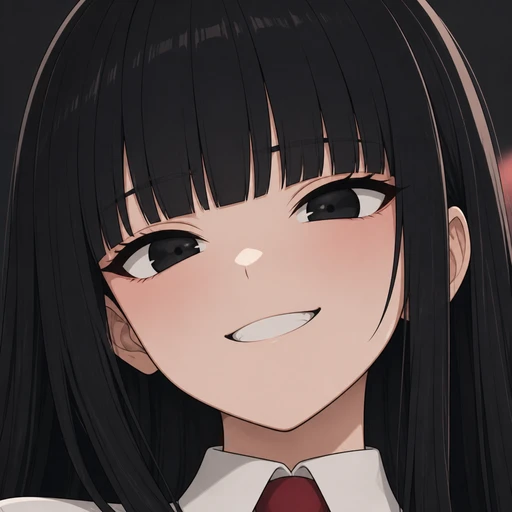
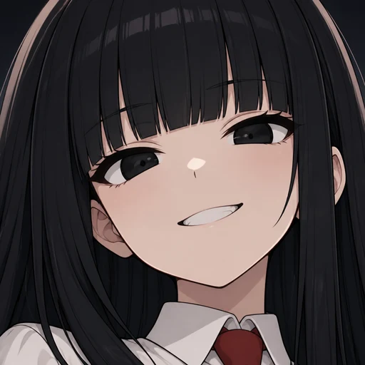

운영자 260805 "머지하고 재생성 ㄱㄱ". v1·v2는 시트 원본을 자른 것이라 진짜 해상도가 150px에 묶여 있었다. v3는 그 재단본을 레퍼런스로 첨부해(edits = 얼굴 앵커) 1024²로 새로 그린 것 — 같은 얼굴, 진짜 디테일. 경로 = 신설 sheet=FACE(365차) · 실행 = yeta-char-board 수동 dispatch 1회(테이크 2장).
v2재단 · 원본 150px → 512(3.4배 확대)
프레이밍은 맞췄지만 선이 물러 있다 — 확대의 한계.
v3 채택재생성 · 1024 원본 → 512(축소)

머리카락 한 올·속눈썹·홍채 하이라이트가 실제로 있다. 배경은 프롬프트대로 평평한 어둠.
v3 대안같은 dispatch의 테이크 2

약간 더 넓고 깃·어깨가 보인다. 「머리가 프레임을 채운다」 기준엔 테이크 1이 더 맞아 그쪽을 채택.
v2 재단
v3 재생성
작은 원에선 둘 다 멀쩡하다 — 차이는 크게 띄울수록 벌어진다(200 열). 이게 「재단 vs 생성」의 실제 값어치다.
| 항목 | v2(재단) | v3(재생성 · 채택) |
|---|---|---|
| 진짜 해상도 | 150px(시트 얼굴 박스) | 1024² |
| 512² 만드는 법 | 3.4배 확대(xbr) | 2배 축소(lanczos) = 손실 0에 가깝다 |
| 경로 | ffmpeg crop | yeta-char-board · sheet=FACE · ref=hanna_face.webp(edits = 얼굴 앵커) · takes=2 |
| 산출 | webp q88 · 20.8KB | webp q90 · 27.7KB(원본 png 1.2MB는 board/에 보존) |
| 배선 | 둘 다 동일 — roster.json avatar 경로·media.json 무접촉(파일만 교체) | |
테이크 2로 갈아타려면 한 줄이면 된다 — ffmpeg -i viewer/assets/yeta_char/board/hanna_face_v2.png -vf scale=512:512:flags=lanczos -c:v libwebp -quality 90 viewer/characters/season/hanna/hanna_face.webp. 두 원본 모두 board/에 남아 있다.